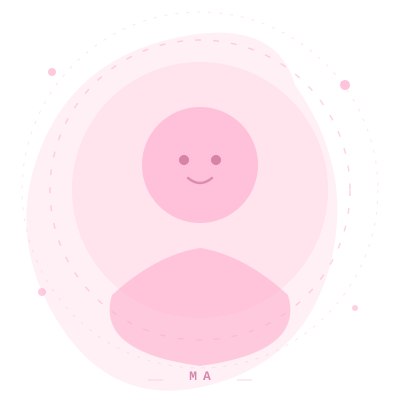
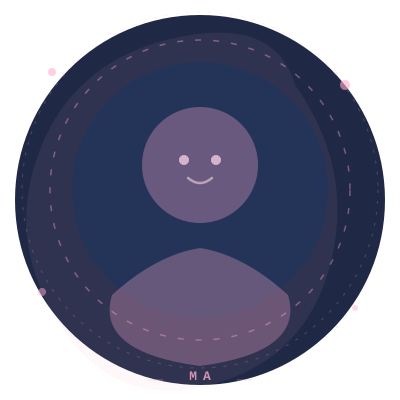

CS Student · Developer · Creative
Building impactful solutions through code, design, and curiosity. From blockchain platforms to accessibility tools — I'm passionate about technology that makes a real difference.


Hi! I'm Michael — a Computer Science student based in Kenya with a deep passion for building things that matter. I thrive at the intersection of technology, design, and social impact.
My work spans blockchain (ICP), web development, AI tooling, accessibility apps, and 3D / motion graphics. When I'm not coding I'm probably writing on Medium or experimenting in Blender.
A handful of things I've built — from blockchain equity platforms to accessibility apps and creative web experiments.
A Python-powered platform for intelligent data processing and automation. Combines machine-learning pipelines with a clean web interface to deliver fast, actionable insights.
The NASDAQ for Kenyan farms. A decentralised platform that lets farmers tokenize equity and raise capital from global investors via M-Pesa and crypto — no bank loans required. Live on ICP mainnet.
An accessibility-first web application developed with the Ability-allies team as part of a DSTV hackathon challenge. Focused on improving digital inclusion for users with disabilities.
A low-code AI orchestration platform for building, deploying, and automating generative AI pipelines. Features a visual drag-and-drop builder, multi-agent workflows, and a RAG-powered knowledge base.